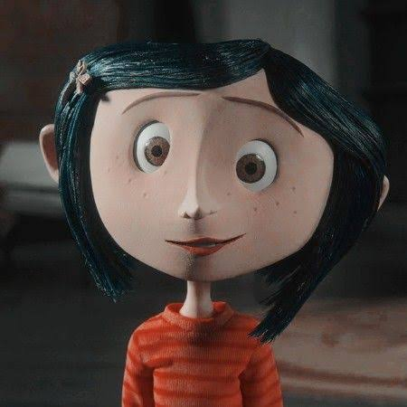
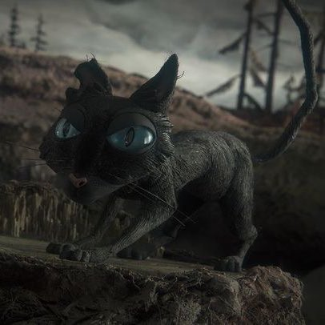
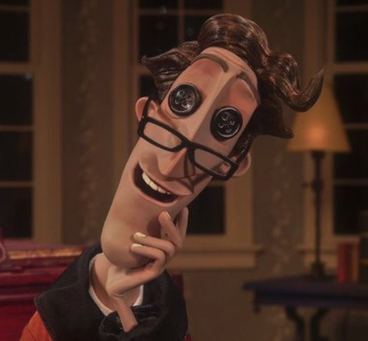
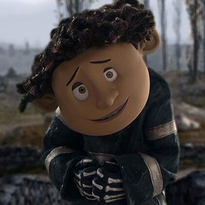

Coraline Jones é uma garota de 11 anos. É originária de Pontiac, Michigan e acaba de se mudar para o Palácio Cor de Rosa em Ashland, Oregon.

Beldam, A Bela Dama ou também conhecida como A Outra Mãe é a principal antagonista do filme Coraline e o Mundo Secreto.

O gato é um dos personagens principais da história. Ele aparece e desaparece à vontade e tem a capacidade de falar no outro mundo.

O pai do outro mundo, controlado por Beldam.

Amigo de Coraline, neto da proprietária do Palácio cor-de-rosa.
clique aqui para voltar à página inicial.